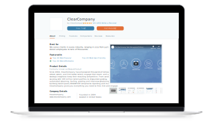

Software Product Profile Page Redesign
I was challenged with reconfiguring Capterra's product spotlight page to better serve our users and to introduce a number of new features including compare, resources, and more.

The Problem
Capterra’s product profile page faced declining conversion rates and a user base who wanted better functionality, data, and performance. Users were not finding the information they needed to convert, and the page’s outdated UI caused users to mistrust the template.
“Spotlight” pages highlight product specifications, features, and reviews. Each product listed on Capterra gets a Spotlight page and the ability to add details about what their product can offer potential users. Spotlight pages allow users to do a deep dive into the products they are interested in, and to convert on products that seem like a good match. Not only are Spotlight pages important to the user, but they are important to Capterra from a revenue perspective.
While traffic to the Spotlight pages was increasing, conversion rates remained lower than on the rest of the site. Users were bouncing from these pages without finding a software that worked for them, and the portion of users who did convert did not always meet the product’s minimum requirements to be considered a qualified lead. My project was to identify how users wanted to use this product, and to implement a solution that helped connect more software buyers with the correct software providers.
New Features
Overhauling the Spotlight page was an aesthetic, functional, and technical redesign. Product decisions were led by user needs: how can this page template best provide the information users need to make an informed, successful buying decision?
The first step in this project was getting a better understanding of user needs and expectations. Through heat mapping, Google analytics, and user interviews, it became clear that not only did users want more interactive and informative features, they also had issues with the UI’s hierarchy and unscannable layout.
For example, while the old template design showed the starting price and trial options a product offers, that data was crammed into a sidebar that was easily missed by users. Many users expressed frustration that the screenshots took up over half of the browser on load. Additionally, the reviews were difficult to read because the text was small and spanned the full width of the page.
Beyond UI issues, the template also offered very few interactive elements for the user to customize their experience. In response to this issue, we developed the ability for users to begin a comparison with similar products within the Spotlight page. We also added a filter to the reviews section so that users can narrow down their results to reviews that are more relevant to their experience.

Post-Launch Findings
The new Spotlight page succeeded in helping users efficiently decide whether or not a software product was a good option for them. However, the redesign introduced new frustrations like an overwhelming amount of content, and an underwhelming UI.
After launching the new Spotlight design, we closely monitored user engagement and performed a series of user surveys. While conversions improved and users were more often successfully finding software that met their needs, the redesign was not perfect. Users consistently expressed frustration over how much more overwhelming the page seemed with the additional features. They wanted a page that put these features into a more easily digestible layout.
In the spirit of iteration, I jumped back into the project to apply the new Capterra design system to the template, and to hopefully solve some of these user issues. This second round of iteration focused primarily on improving the page’s UI: adding color, a clearer hierarchy, grouping like content together more to aid in scanning, and reducing the footprint of less-helpful features.
Outcomes:
Conversion rate remained consistent, and vendor conversion rate increased by 7%. Time on page increased by 10%. Comparison rate increased by 41%. Page speed decreased by 38%.

The Solution
Adding fresh and professional UI to a template is an important step in gaining user trust. Until both the UX and the UI of the product were optimized, the template was not able to reach its full potential. Future improvements to the product will prioritize both simultaneously.
For years this template was only optimized to funnel traffic to the product vendor's website. The business prioritized conversions over creating a lasting relationship with their users. But as user behavior changes and quality traffic becomes more valuable, the need to make this template actually satisfy user needs was too important to ignore.
I found that emphasizing product screenshots, organizing the raw data into easier-to-read tables, and adding a subnavigation helped users quickly absorb the huge amount of product information on the Spotlight page. Adding visual elements like icons, illustrative graphics, and vibrant pops of color helps users see the product as trustworthy.
In the redesigned UI for the Spotlight Page I made sure to include as many context-providing elements as possible. Users consistently had trouble knowing whether or not a data point about a product (for example: “starting price”) was at, above, or below industry standard. The new Spotlight page provides that context when possible.
I also found that it is more valuable to the user to provide many opportunities to convert, rather than retaining one, large, sticky conversion point at all times. Banner blindness and an aversion to sticky elements caused users to mistrust the first iteration of this page. Instead, showing clear, relevant, consistent CTAs throughout the page is more organic and enticing to the user.
As the Spotlight page continues to evolve, I know there is a lot more work to be done to both improve business performance and user experience. The next massive undertaking for this product will be to optimize the mobile experience to give the user a more catered view for on-the-go research.

Next Case Study
PPC Landing Pages
Product Page Directory